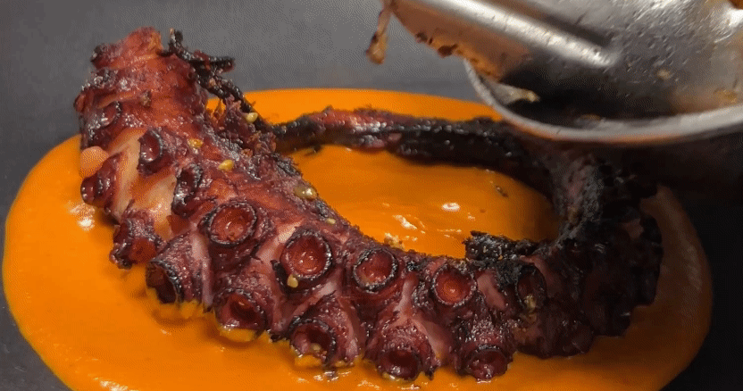

Welcome to Velora Mar
Discover Velora Mar — a modern seafood destination inspired by the elegance of the ocean. Whether you’re visiting Tampa Bay or planning the perfect evening out, we offer fresh flavors, refined ambiance, and an experience worth remembering.
The name Velora Mar blends elegance with the spirit of the sea. “Velora” evokes a sense of grace, beauty, and flowing movement — much like ocean waves at sunset. “Mar,” meaning “sea,” grounds the name in its coastal inspiration. Together, Velora Mar represents refined dining shaped by the rhythm, freshness, and serenity of the ocean.
Our name reflects more than just seafood — it symbolizes an experience. From the glow of golden sunsets to the artistry of every plated dish, Velora Mar is where coastal charm meets modern sophistication.
Featured Dishes & Specialty Items
- Truffle Lobster Risotto
- Seared Scallops with Citrus Butter
- Grilled Octopus with Lemon Aioli
- Blackened Mahi-Mahi Tacos
- Crispy Calamari with Spicy Marinara
- Oyster Rockefeller
- Seafood Paella Valenciana
- Lobster Mac & Cheese
- Herb-Crusted Salmon with Lemon Beurre Blanc
- Clam Chowder in a Sourdough Bowl
